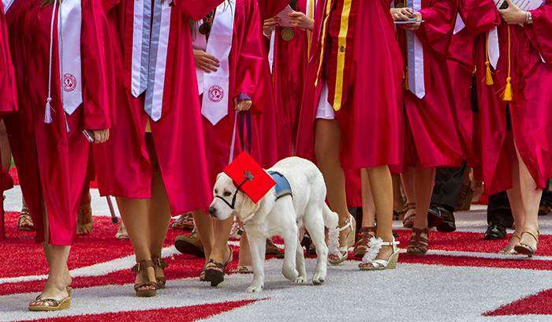

4 Paws for Ability is an organization that specially trains dogs for individuals with disabilities. 4 Paws is headquartered in Xenia, Ohio, but Miami University has teamed up with the organization through the 4 Paws University Program. The main goals of this program are: to help assist 4 Paws in the training of their service dogs, to help educate people about service dogs and disabilities, and to help 4 Paws with their mission to improve the lives of people with disabilities. Students who are interested in joining the organization must first go through a strict application and interview process. If chosen as either a foster or a puppy-sitter, the student will be given a service dog in training for a semester. Fosters will take the dog everywhere he or she goes. There are special rules in place that the foster must follow regarding interactions with the dog. Fosters will receive the dog when they are 3-6 months old. The dogs are already potty trained and know basic commands. If a student wants to join the organization but does not want to foster a dog, they can join as a general member and assist in fundraising and educating the public about disabilities and service dogs.
